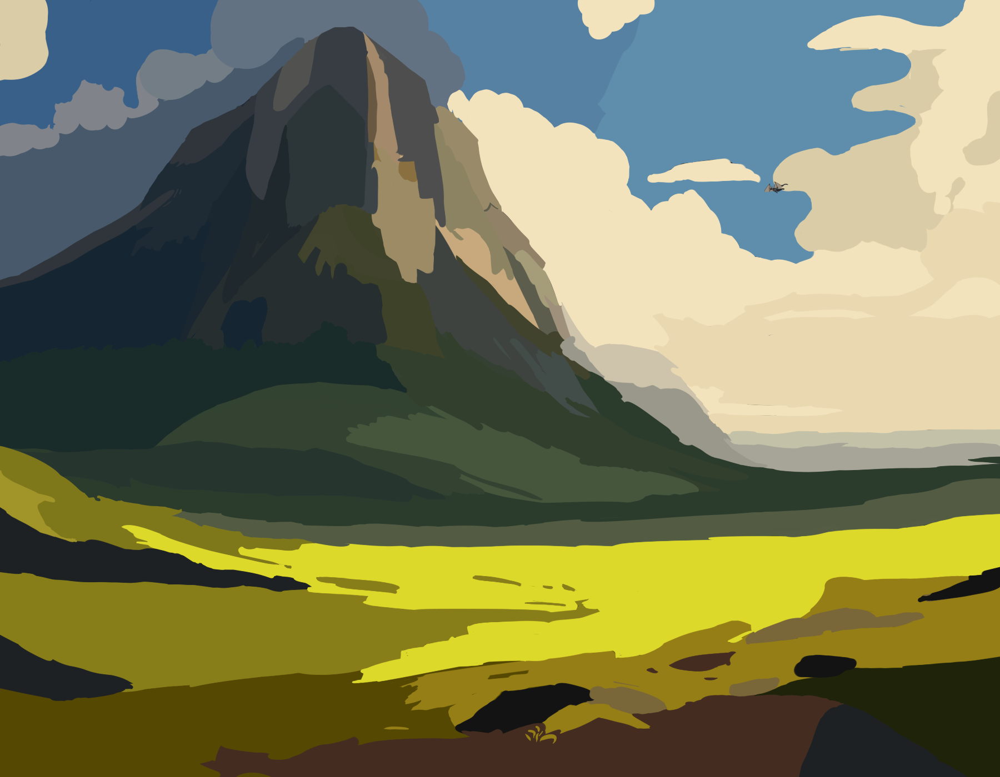
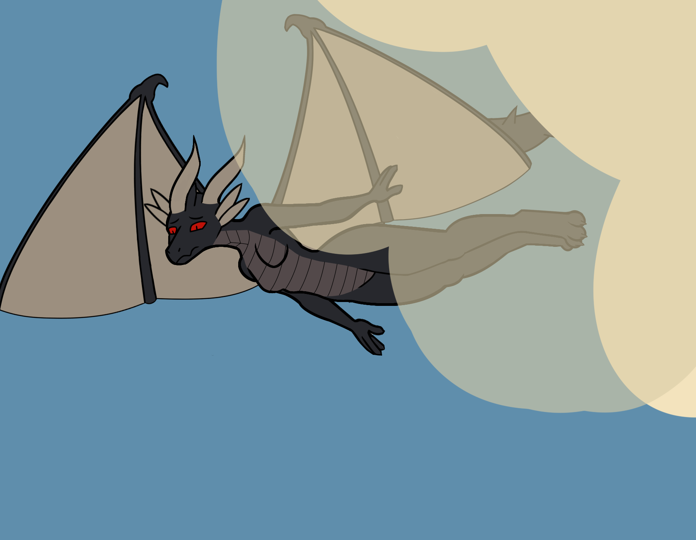
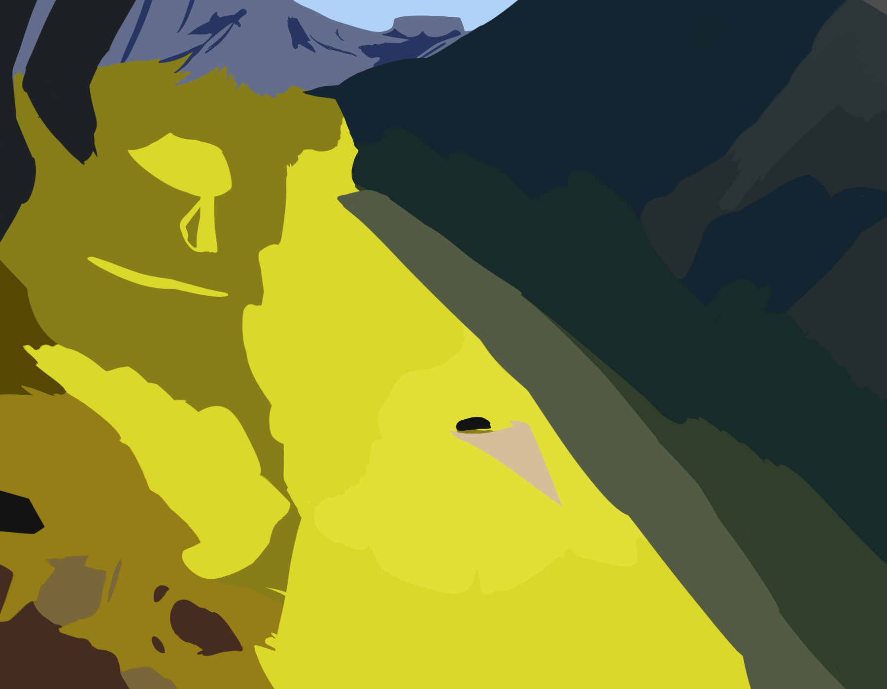
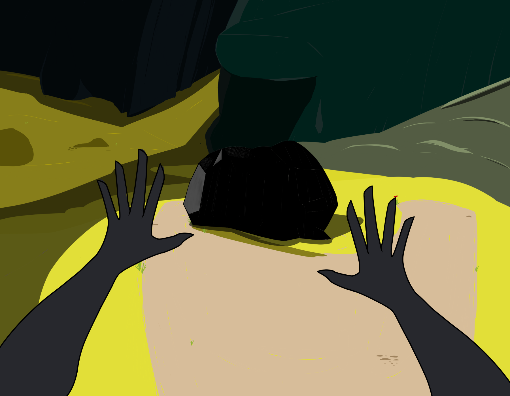
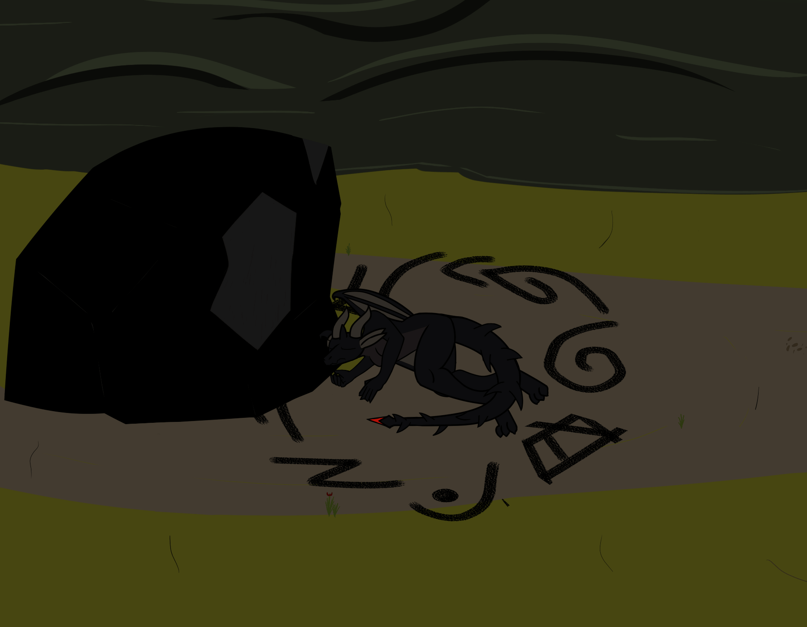
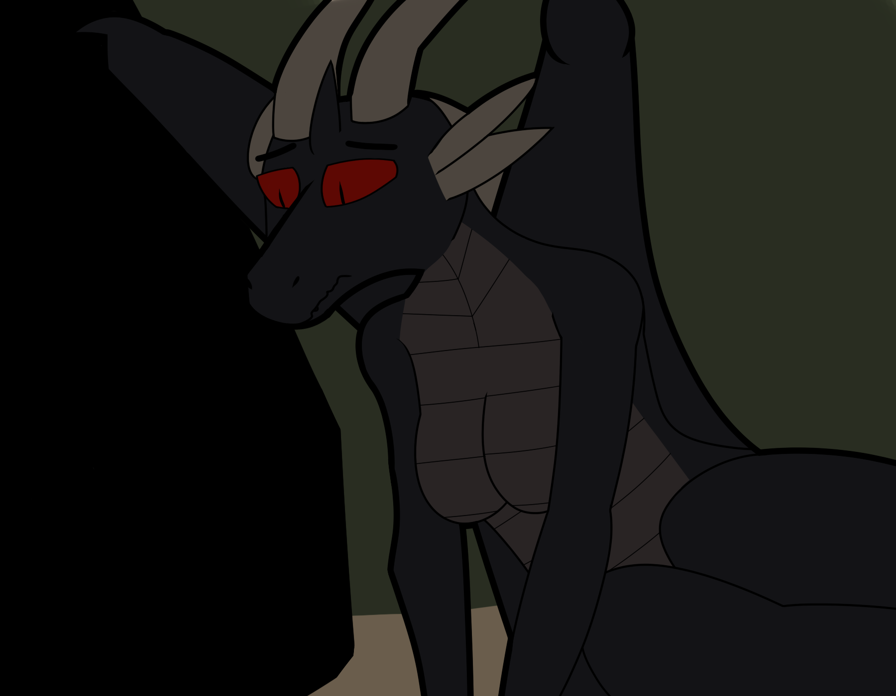
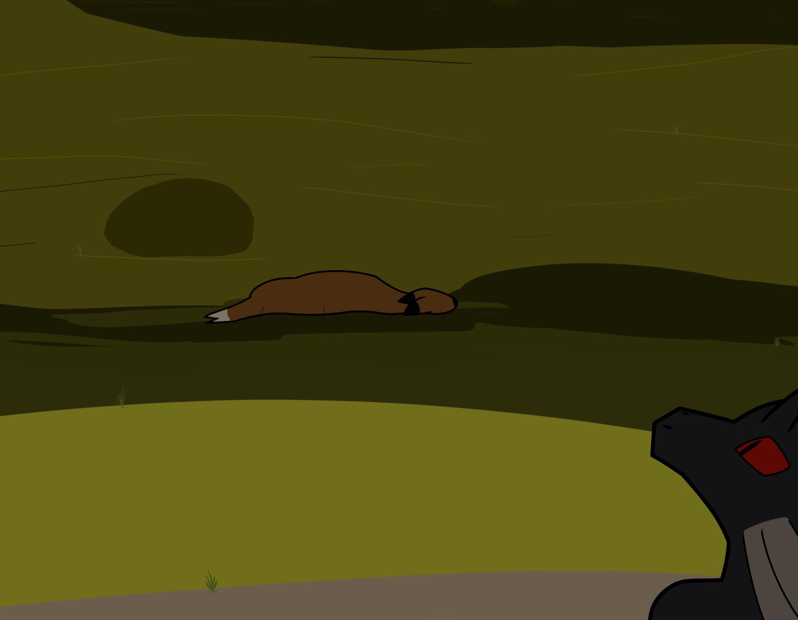

Amber.

Whispers of the mountain bear down, cold from the high peak, kissing her back. The sun's rays do little good here in presence of the beast, a colossal mass of stone, earth, ice, and low grass to be her marker. Mind is racing, cramming where time is little. She's already died, the thoughts flying in her mind more surely than herself, ways to undo the mistake of climbing too high on too little strength. Hoping she would see something to eat, now only seeing the rapidly approaching ground.
It had been days since the last time she had eaten, not exactly food, and added further were the harder winds of the region, always driving against her with their own unexpected, shifting invisible goals. Accurate to note, the dark intruder is the new aspect to the skies, rather than the wind itself. Wind only exists Amber, your invasion of it has been long tolerated, is it no wonder you'd fall from it climatically? Likely not to be buried, and picked apart by animals.

Incredible, the options of her ruin are nearly limitless. There's the side of the mountain, as firm as it gets, and forever preserved limbs probably clutched onto the edge of some high-up rock face. A bird's nest could be made from her bones, perhaps giving life where none would exist otherwise. As an opposite, the low grass scrub, or the channel of sand at the base of the mountain, or consider the dry river rocks opposite them both. A red and black marker to be seen for miles there. Amber could climb higher too, and would surely drop completely any moment after. Invisible knives are buried into her shoulders going down her back, and every additional second of holding her wings tight, of keeping herself aloft, their edge grew sharper.
Amber.
There is no going outside of this moment, not now. Why reflect, nobody else will know? Counting isn't helping, the pain is real and unignorable, and it is deftly spreading. In her mind, she hopes she can hold on until she gets to the ground safely, as countless times before, but height will outlast her. There's no infinite strength to frame, this is it.

Terror drives her, aiming for the sand isn't going to help, the softness of it is an illusion. It pretends to be comforting, compared to river stone or the side of a mountain, but nothing is truly soft when falling down from heaven like an obsidian rock. Rather than splattering into the ground and stopping instantly, there will be a terrible shredding, Amber. Dispersed to the sands beneath this likely named mountain, giving you an unnamed grave. That is unless you're dead-set on crashing into the only obstacle in th—
Amber.

Alive. Still.
Head pounding, horns are ringing like they're full of stinging bees, even her tongue hurts. A sharp pain running down the middle of her back, warm blood slowly trickling down to gather in the sand behind her. Very good fortune Amber's tail hadn't done more damage, like cutting into the spine, getting stuck in her back, or severing a wing. A loss of flight would be its own death, wouldn't it? One more deserved than only falling.

Well, not many options from this point. Starving is a possible avenue still on the plate, ironically, but withering slow on the ground might not be better than flying high and pulling her wings tight, falling. At least then it would just be over, the hunger pulling at her isn't adding to her rational choices, knowing the future suffering to follow. But fate is leading to another terrible possible end either way. She would rather do it where nobody and nothing was close at all, at least. That's the minimum she can try to manage.
Cold wind digs low even in this spot, curling around the large rock next to Amber as surely as the water did when it fell and gathered here to make this patch of sand. Did the rock mind? It was large, more than just large actually, and polished, shining even this deep in the night. Years of water and wind had carved it, interchangeably, one never in the presence of the other, but both carving the boulder in their own way. The black stone losing a bit at a time. Amber reached out to touch it with her clawed hand, but now she heard breathing.

Food is always ideal. There's a total importance of having it to ensure life goes smoothly. It's an inherent pull for most, and there will never be enough for everyone. So to have a full living deer Amber, right when you needed it most, for you, is great luck. A bow and ribbon should perhaps adorn it, a symbolic gift from whatever dark authority keeps you sustained.